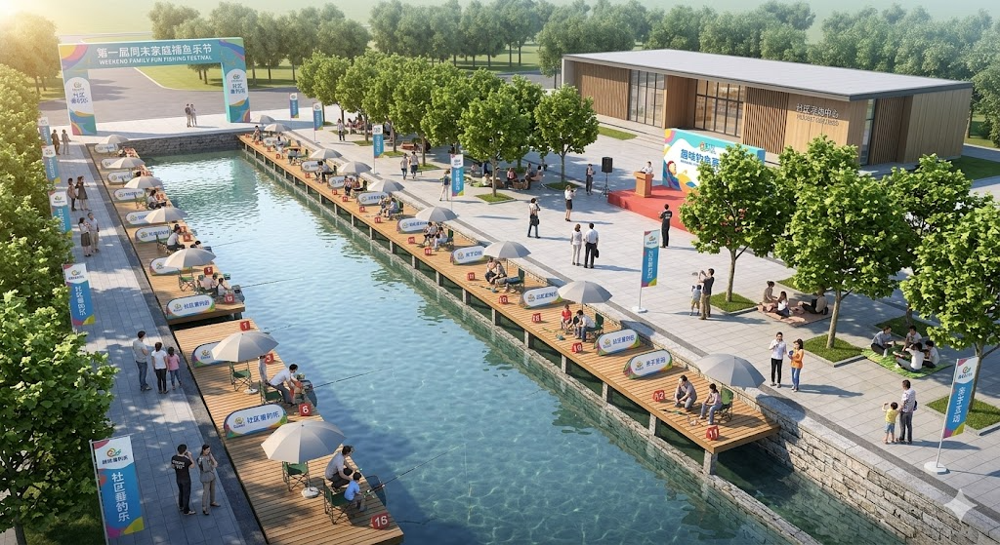
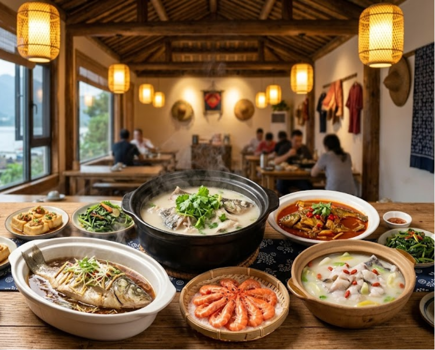
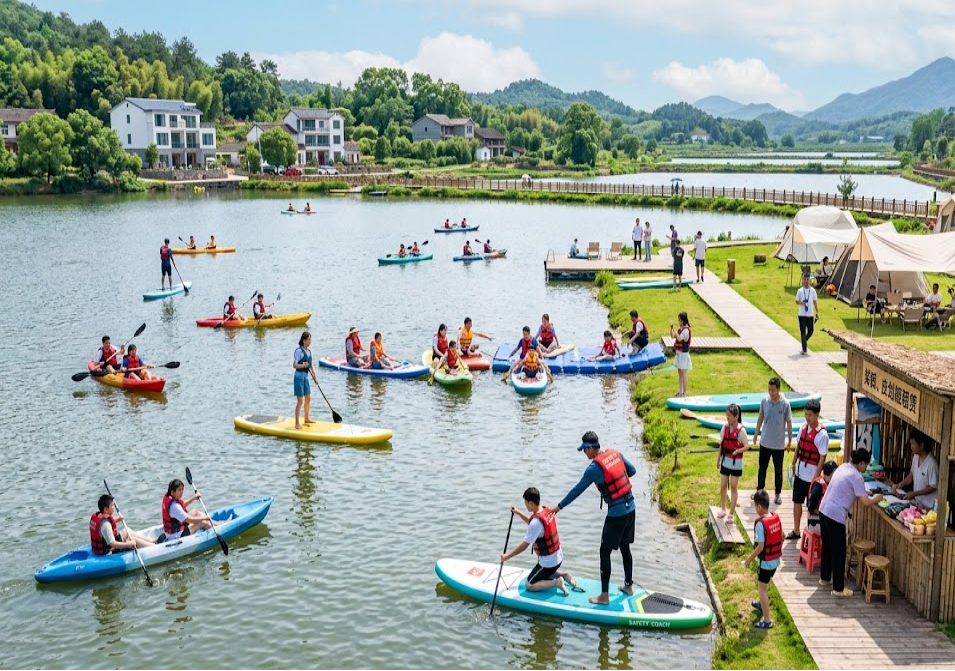
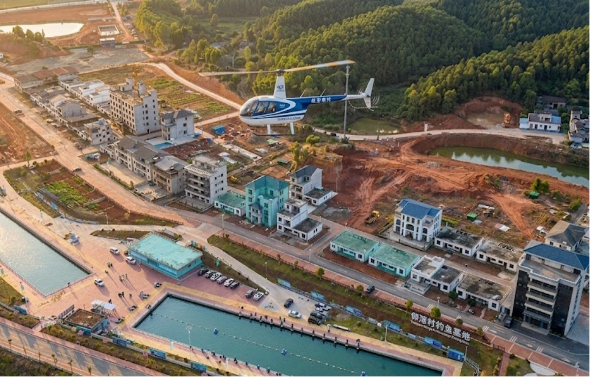
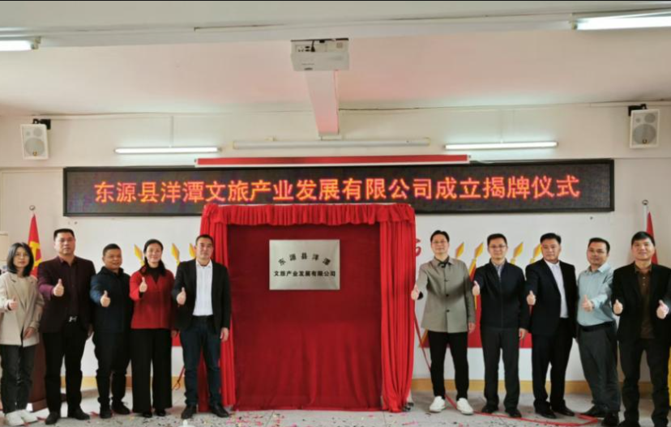
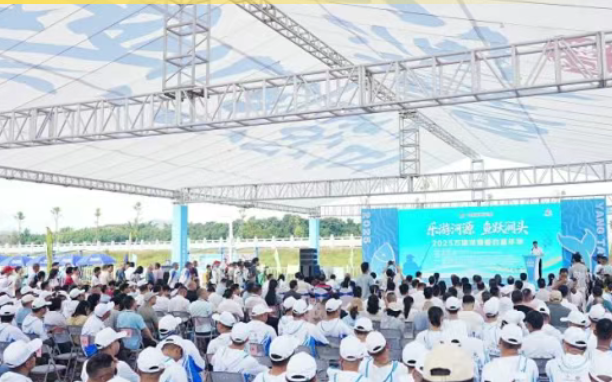
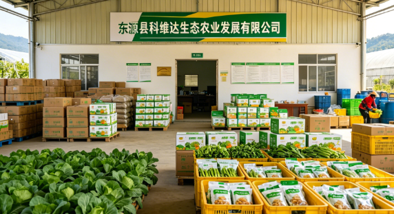
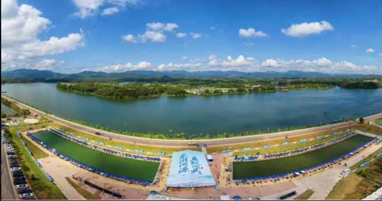
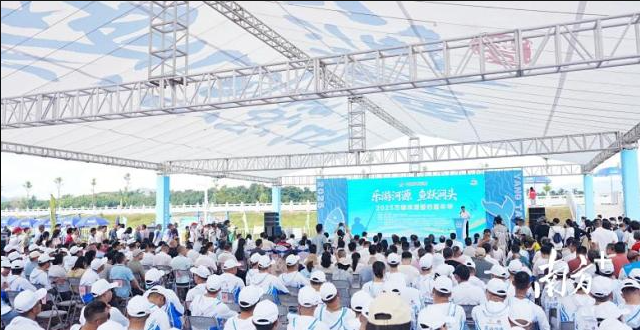
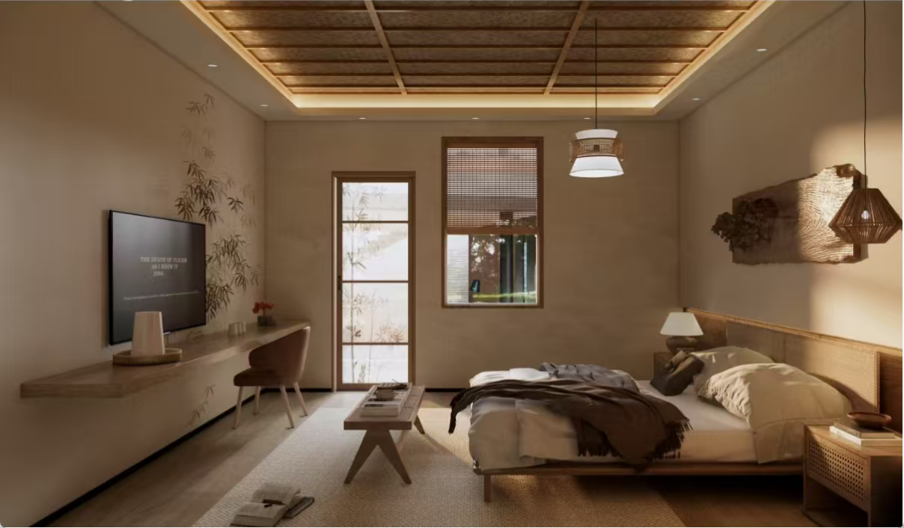

洋潭村位于广东省河源市东源县涧头镇东南部，地处万绿湖上游， 东临新丰江水库，西接涧头圩镇，南连船塘镇，北望锡场镇， 全村总面积约8平方公里，下辖9个村民小组，现有户籍人口约1200人、320户。 洋潭村拥有约600年历史，是省级"百千万工程"典型培育村， 依托5A级万绿湖生态旅游核心资源， 建设了河源市首家省级标准垂钓竞赛基地， 拥有标准竞技钓位120个，是广东省最具影响力的生态垂钓胜地之一。 村内古树参天，传统客家民居与现代休闲设施和谐共存， 正着力打造"垂钓小镇·渔村民宿·农文旅融合"示范区， 全力推进乡村振兴与数字乡村建设， 以"枕水渔十·万绿归宿"为品牌， 开创东源生态经济发展新样本。









